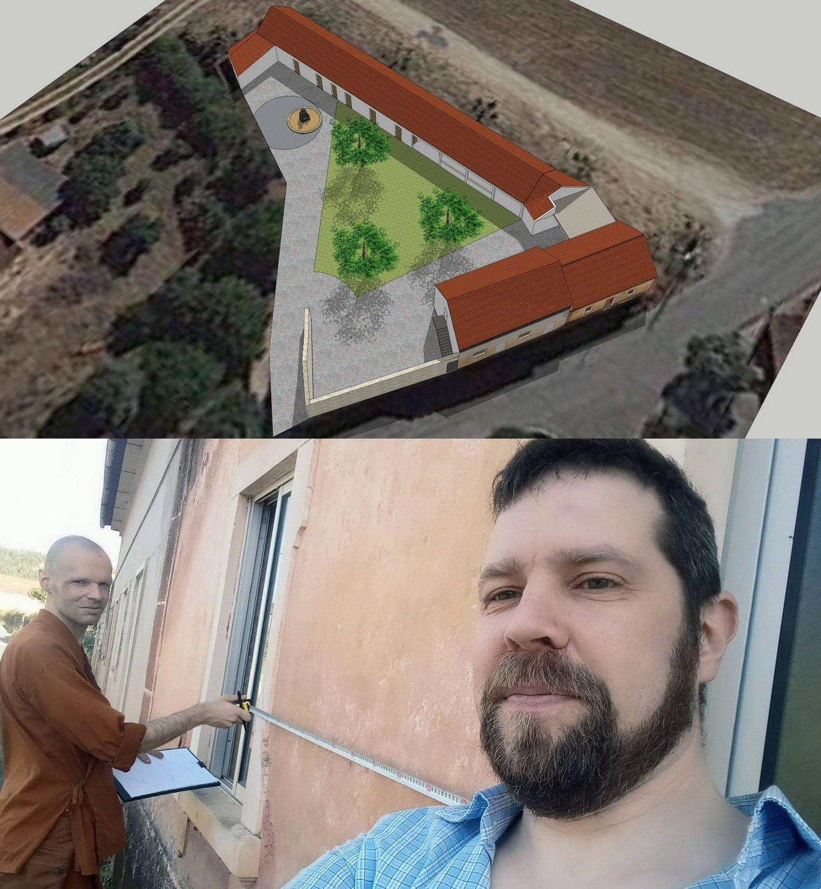

Did you miss MetaProvide last month?
With so much happening internally at MetaProvide, we had to focus on our projects, objectives and team so we were absent last month for the blog.
Now we're back, stronger than ever and ready to keep you up to date on our organisation, platforms, achievements and lessons learned along this journey.
Furthermore, we're ready to bring you different and innovative content. Whether you've been with us from the beginning or have decided to join us just now, our objective remains the same: to help people.
Therefore, grab a coffee and your favorite seat to enjoy our blog. We're so happy to share our latest accomplishments on this journey with you.
The MetaGathering 2.0 was a huge success!

Our annual team meeting, that took place the first week of July along the coast of Portugal, in Lourinhã, was a big success. It was incredible for us to grow and develop our skills, ideas and projects, as well as strengthen our ties and unite as a team, more than ever.
Why have an annual team meeting?
For most of the year we are 100% remote. We're interacting through online video conferences, working together on shared documents and looking at a screen for most of the day.
Remote work has many advantages, especially the flexibility which allows for a team of people from different cities, countries and cultures. In fact, this makes our team unique!
However, something is missing when people are not close-by to interact and work together directly. To improve as individuals and a team, as well as deliver the best projects possible to MetaProvide, MetaGathering has become our tradition to interact in person!
Why meet in Portugal?
Our organisation was born in Sweden, but we have many roots in Portugal which brought us to this beautiful country.
Several people from our team are based in Portugal and we have a great connection with the Monastery of Ericeira, thanks to the founder of MetaProvide, a former Buddhist monk. We also own land in Sourões where we'll create our community, MetaLand.
How was the MetaGathering this year?
This year was particularly unique and special for us at MetaPovide! Our team has grown so much since the last gathering, so this was the first time that many of us got to meet in person and spend an entire week together.
In addition to exploring important parts of our story, we worked together to develop as a team and begin new projects through a shared vision.
How was this accomplished? We grew together through workshops and group activities, walks and team dinners, as well as meetings with MetaProvide clients, advisors and partners.
In the end, what really mattered: the unity of all those involved to reach the same goal of helping more and more people with our platforms and potential projects.
MetaLand: our dream and project, in physical form!
We're constantly talking about MetaLand around here: either through our blog, website or just chatting with someone on our team. MetaLand is always in our thoughts simply because, at least until now, it is our only fully physically project.
You see, MetaLand will be built on land located in a small village in central Portugal. We have big dreams for this land, focused on improving the experience of our platforms.
What, exactly, is MetaLand?
MetaLand has the potential to be many things for you, us and our partners. We believe that this space could mean something different to each individual, but we all share the same intention: a place to construct our community.
Whether it is a place for providers to network, for explorers to find other types of help, or different people to join in spiritual retreats, the principle objective is to create connections between people. These connections are the foundations for building our communities and involving more and more people around us.
How will we build this project?
In partnership with our architect, the idea is for this place to have a strong connection with nature, as an open space. At the same time, it has closed facilities specifically for the colder months, ready to receive diverse groups and different types of gatherings.
This project is still in development, so we will keep you updated about it!
When will we have more updates about MetaLand?
This project is steadily developing, especially because we're focused on other solutions to help more people. But make no mistake: we are, with each passing week, more committed to getting this project off the ground.
In fact, a lot has been done over the last year so construction can begin once we have the project well defined. To get the inside scoop on how this real life dream is progressing, stay tuned for our blog updates and sign up for our newsletter so you don't miss out!
Insidely is finally upon us!
After many ideas, insights, workshops, meetings and activities, finally our much anticipated platform has a name: Insidely!
What is Insidely?
You probably know Insidely by it's previous name, MetaFriend. This will be our 100% free platform for Explorers, those who seek growth or want support in some form to find their way in the world.
Why the name Insidely?
To decide on the the name Insidely, there was much thought and discussion. We considered our main objective: reach people who are searching to truly know themselves internally, to understand and effectively respond to those feelings inside, whatever they may be.
How will this work on the platform?
Insidely aims to connect people looking for answers and wanting to grow with qualified well-being providers. We aim to have a vast range of providers like psychotherapists, Qi-gong instructors and skilled coaches to help you. We’re creating a free volunteer-based service to help millions of people on their many journeys of self-discovery.
We are now piloting our product and need your help! If you are looking for a provider or some type of support, click this link and select one of the options available on our site.
Access: https://www.adminly.org/metafriend/
We hope you've enjoyed this new edition of our blog! More than ever, we're ready to share a bit more with you about us, our story, team and everything we're working on to try to improve our world.
In case you've got any questions, ideas or suggestions, get in touch with us via email. Our Marketing and Branding Manager, giuliana.bueno@metaprovide.org, would love to hear from you!
If you'd like to discuss potential partnerships, donations or investments with MetaProvide, please contact our fundraiser via email: fundraising@metaprovide.org
See you at the next edition!